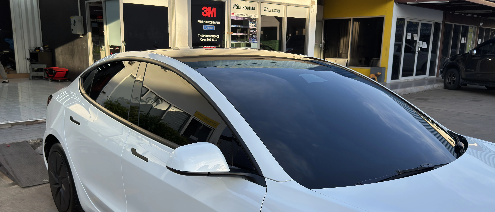
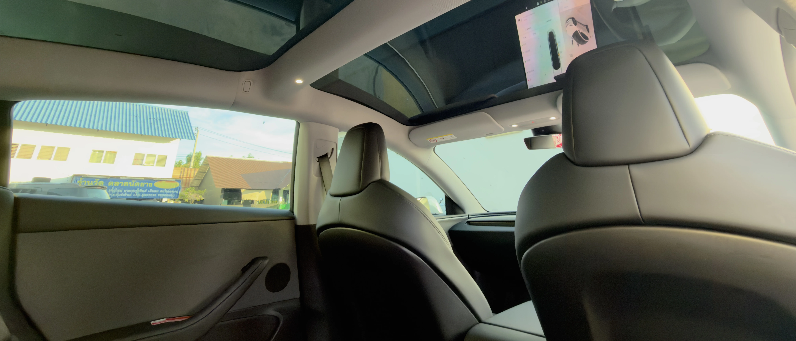

กลางวัน
ช่วยลดแสงจ้าและเพิ่มความสบายในห้องโดยสาร โดยยังคงโทนการมองเห็นที่เป็นธรรมชาติ
POSITIONING
ถ้าคุณต้องการฟิล์มที่ไม่เข้มเกินไป ไม่โปร่งเกินไป และใช้งานได้ง่ายจริงในทุกวัน IR15 มักเป็นจุดเริ่มต้นที่ลงตัวที่สุด
เฉดนี้ให้ความเป็นส่วนตัวในระดับที่พอดี ช่วยลดแสงจ้าได้ชัดเจน และยังคงการมองเห็นที่สบายสำหรับการใช้งานทั่วไป จึงเหมาะกับรถบ้าน รถครอบครัว และรถที่ใช้งานประจำวันจำนวนมาก

WHY IR15
ให้รถดูมีความนิ่งขึ้นกว่าฟิล์มโทนโปร่ง แต่ยังไม่หนักจนเกินไปสำหรับการใช้งานทุกวัน
เหมาะกับผู้ที่ต้องการความเป็นส่วนตัวเพิ่มขึ้น แต่ยังอยากให้การมองออกจากรถรู้สึกสบายและเป็นธรรมชาติ
ทั้งรถใช้งานส่วนตัว รถครอบครัว และรถรุ่นใหม่ ที่ต้องการโทนฟิล์มซึ่งเข้ากับภาพรวมรถได้ง่าย
WHO IT IS FOR
IR15 เหมาะกับผู้ที่อยากได้ฟิล์ม “จบง่าย” โดยไม่ต้องเลือกสุดทางด้านความเข้มหรือความโปร่ง
ถ้าคุณขับรถทั้งกลางวันและกลางคืน ใช้รถในชีวิตประจำวัน และต้องการให้ห้องโดยสารสบายขึ้นพร้อมความเป็นส่วนตัวที่พอดี เฉดนี้มักเป็นคำตอบที่ปลอดภัยและลงตัวที่สุด
SPECIFICATION
| รายการ | IR15 |
|---|---|
| Visible Light Transmission (VLT) | 16% |
| Glare Reduction | 78% |
| Total Solar Energy Rejected (TSER) | 63% |
| Infrared Rejection (IRR) | 90% |
| IR Energy Rejection (IRER) | 67% |
| UV Rejection | 99.9% |
| Construction | Metal-free Ceramic Film |
ตัวเลขใช้เพื่อช่วยเปรียบเทียบแนวโน้มของเฉดในซีรีส์เดียวกัน ผลลัพธ์จริงอาจต่างกันตามกระจกรถและลักษณะการใช้งาน
REAL-WORLD USE

ช่วยลดแสงจ้าและเพิ่มความสบายในห้องโดยสาร โดยยังคงโทนการมองเห็นที่เป็นธรรมชาติ

ยังอยู่ในระดับที่คนส่วนใหญ่ใช้งานได้ง่าย จึงเหมาะกับผู้ที่ขับรถช่วงเย็นหรือกลางคืนเป็นประจำ

เหมาะกับรถครอบครัวและรถส่วนตัวที่ต้องการสมดุล ระหว่าง comfort, privacy และ ease of use
COMPARE NEARBY SHADES
IR15 โปร่งกว่า ใช้งานง่ายกว่า และเหมาะกับผู้ที่ไม่ต้องการฟิล์มเข้มจัด ขณะที่ IR05 จะเหมาะกับคนที่ต้องการความเป็นส่วนตัวสูงกว่าอย่างชัดเจน
IR15 เข้มกว่าและให้ความเป็นส่วนตัวมากกว่า ส่วน IR25 จะเหมาะกับผู้ที่ต้องการความโปร่งและการมองเห็นที่เบาสบายขึ้น
ถ้าคุณไม่ต้องการเข้มสุดหรือโปร่งสุด และต้องการจุดสมดุลที่ปลอดภัยสำหรับการใช้งานส่วนใหญ่ IR15 คือเฉดที่ลงตัวที่สุด
RELATED PAGES
สำหรับผู้ที่ต้องการโทนเข้มชัดเจนและความเป็นส่วนตัวสูงขึ้น
สำหรับผู้ที่ต้องการโทนโปร่งขึ้น มองออกสบาย และยังได้ comfort จากฟิล์มเซรามิก
ดูภาพรวมของซีรีส์ Ceramic Ultra Clear และแนวทางเลือกเฉดทั้งหมด
สำหรับผู้ที่ต้องการขยับไปยังฟิล์มระดับบนที่เน้นความ refined และภาพรวมพรีเมียมมากขึ้น
INSTALLATION QUALITY
ฟิล์มที่ใช้งานง่ายและดูลงตัว จะยิ่งเห็นผลชัดเมื่อการติดตั้งเรียบร้อย กระจกถูกเตรียมอย่างดี และรายละเอียดของงานสะอาดตั้งแต่ต้นจนจบ
เราจึงให้ความสำคัญกับทั้งการเลือกเฉดให้เหมาะกับรถ และการติดตั้งที่สม่ำเสมอ เพื่อให้ผลลัพธ์ที่ได้เหมาะกับการใช้งานจริงในระยะยาว

CONSULTATION
แจ้งรุ่นรถ การใช้งานกลางวัน/กลางคืน และระดับความเข้มที่คุณชอบ เราจะช่วยดูว่า IR15 เป็นเฉดที่เหมาะกับรถคุณหรือควรขยับไป IR05 หรือ IR25
ปรึกษา / นัดหมายติดตั้ง